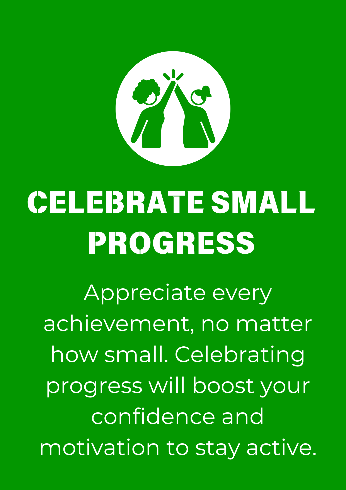
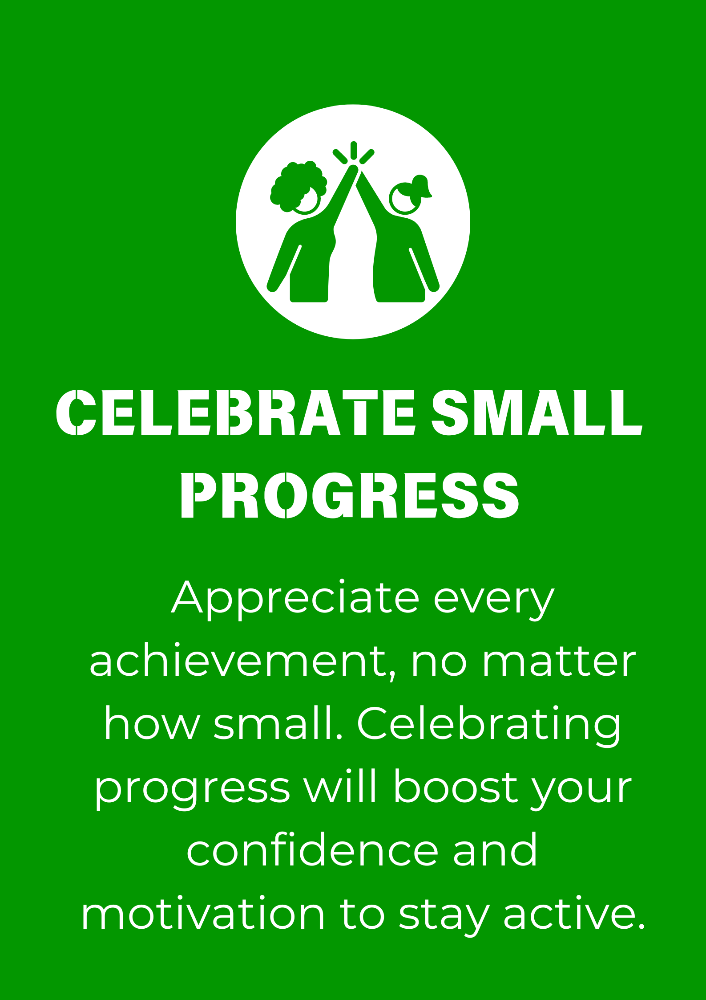

FitSteps is more than just a fitness platform. It's your gateway to a healthier, more active lifestyle. Explore tips, workouts, trendy shoes, and more, designed to help you take small steps towards big changes!
Whether you're looking to find the best workouts, understand health benefits, or stay up-to-date with the latest in sports lifestyle trends, FitSteps has something for everyone.

 
